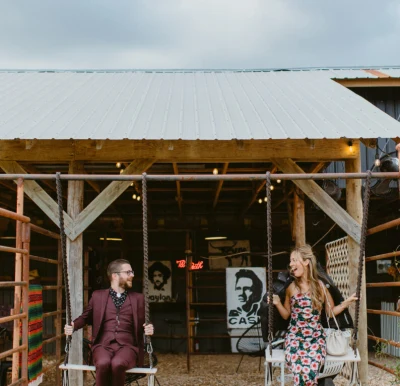
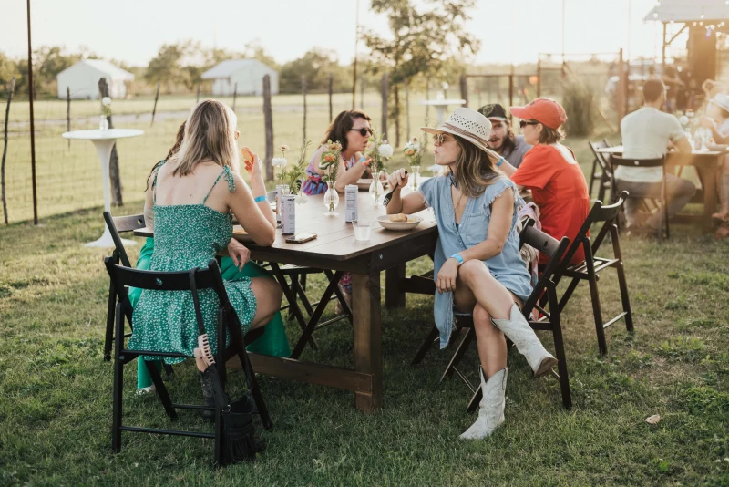
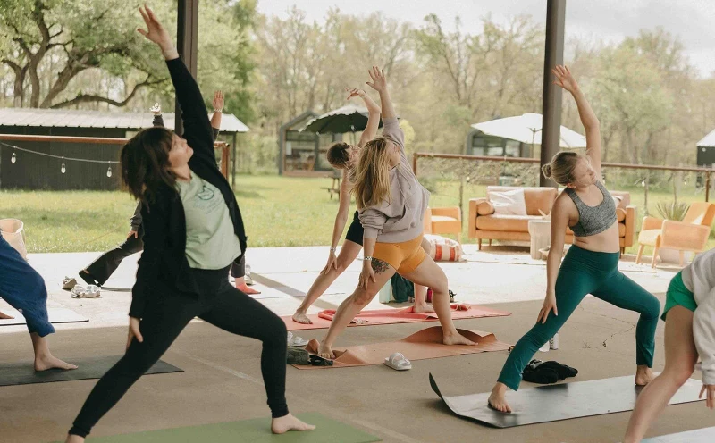
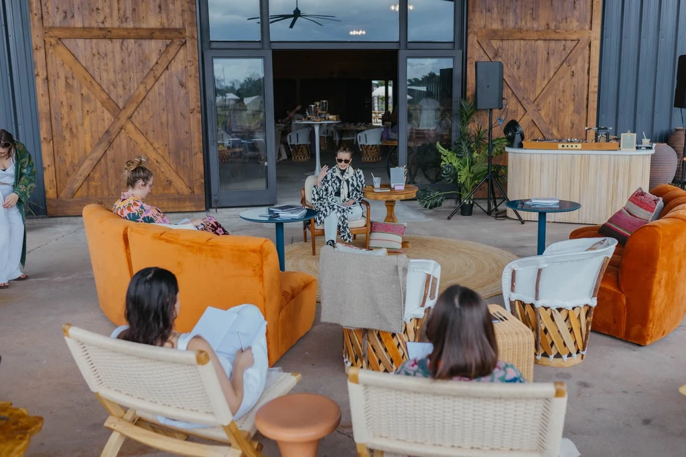

April 7, 2026
Glamping Near Austin, Texas — The Complete Guide
Everything you need to know before you book — what to expect, what to pack, check-in details, and why Rancho Moonrise is the closest full-service option to the city.
Glamping tips, Austin event guides, ranch life stories, and travel inspiration.
April 7, 2026
Everything you need to know before you book — what to expect, what to pack, check-in details, and why Rancho Moonrise is the closest full-service option to the city.

April 7, 2026
Why more Austin couples are choosing venues where the wedding party stays on-site — and what to look for when you're searching.

April 8, 2026
Hotel conference rooms kill creativity. Here's why Austin teams are choosing ranch retreats for better bonding, better ideas, and better results.

April 8, 2026
Manor is more than a pit stop. Here's what to eat, see, and do in Austin's fastest-growing neighbor — plus the best place to make it an overnight trip.
April 9, 2026
Skip the crowded bars. Here's how to plan a private ranch bachelorette weekend the bride will actually remember — pool, fire pits, and 36 acres all to your group.

April 10, 2026
What to look for in a ranch venue, how to budget, when to book, and the questions every couple should ask before signing. The honest guide to Texas ranch weddings.

April 11, 2026
You don't need a 3-hour drive to escape Austin. Here's where locals actually go — from a glamping ranch 20 minutes away to river towns and BBQ capitals within an hour.
April 14, 2026
Real beds vs sleeping bags. A/C vs open air. Resort pool vs creek swimming. The honest breakdown — and how to decide which is right for your Austin-area trip.
April 13, 2026
Canvas walls, real beds, A/C, and a resort pool — 20 minutes from downtown. The closest full-service safari tent experience to Austin. No gear required.

April 12, 2026
Skip the crowded public pools. Get resort-quality pool access 20 minutes from downtown Austin — hot tub, drinks on-site, 36 acres of ranch. Book via ResortPass.

April 15, 2026
Swimming holes, ranch animals, state parks, and a glamping ranch 20 minutes from downtown. The honest guide to Austin family day trips and overnights — no gear required.

April 20, 2026
Hotel conference rooms are familiar and easy to book. They're also designed to keep people in a meeting mindset. Here's the honest comparison Austin teams need before booking their next offsite.

April 21, 2026
Skip the crowded restaurant. Give Mom a real experience — pool morning, yoga & mimosas, or a full overnight glamping stay 20 minutes from downtown. Mother's Day weekend fills fast.

April 24, 2026
Monthly Yoga & Mimosas events on 36 acres, 20 minutes from Austin — outdoor practice, brunch, and pool access. Four dates May through August. Private retreat bookings available year-round.

April 22, 2026
Skip the restaurant buyout. A 36-acre ranch venue 20 minutes from Austin — private event spaces, pool access, overnight accommodations for out-of-town guests. This is what a birthday should feel like.

April 19, 2026
Both are Austin classics. Only one comes with a private pool, no Ubers between stops, and everyone sleeping in the same place. Here's the honest comparison.
April 18, 2026
Resort pool, A/C in every unit, fire pits, and live events all summer long — 20 minutes from downtown. The complete guide to summer glamping near Austin.
April 15, 2026
Goals, venue checklist, timeline, agenda framework, and logistics — everything Austin-area teams need to plan a retreat people actually want to attend.